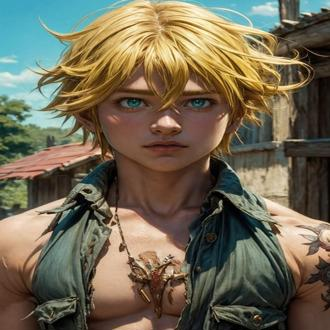
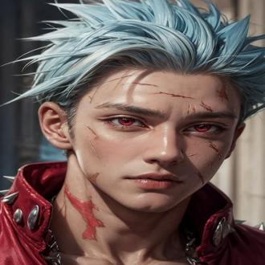
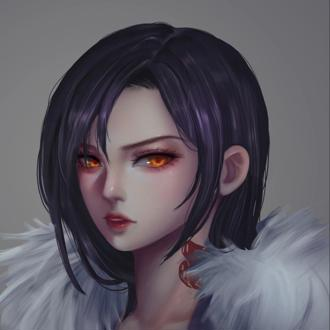

-
Meliodas - Pecado da Ira
Descrição
Meliodas é retratado como alguém gentil, amigável e muitas vezes brincalhão, apesar de seu título como o pecado da ira. Ele tem uma personalidade carismática e é muito dedicado à proteção de seus amigos e do reino. No entanto, ele também possui um lado sombrio e profundo, resultado de eventos traumáticos em seu passado.
-
Escanor - Pecado do Orgulho
Descrição
Escanor é extremamente orgulhoso e confiante, o que se alinha com seu título de pecado do orgulho. Ele acredita firmemente que é o mais forte durante o dia, quando seu poder está no auge, e tem uma atitude arrogante e desdenhosa em relação aos seus oponentes.
-
Ban - Pecado da Ganância
Descrição
Ban é retratado como um personagem extrovertido, brincalhão e muitas vezes imprudente. Ele possui uma personalidade desafiadora e não tem medo de desafiar autoridades ou se colocar em situações perigosas. Apesar de sua natureza impulsiva, ele também demonstra uma lealdade profunda aos seus amigos e um senso de justiça próprio.
-
Merlin - Pecado da Gula
Descrição
Merlin é retratada como uma mulher extremamente inteligente, astuta e pragmática. Ela possui uma personalidade reservada e muitas vezes manipuladora, usando sua inteligência e poderes mágicos para alcançar seus objetivos e proteger aqueles que considera importantes. Ela é conhecida por sua perspicácia e capacidade de antecipar os movimentos de seus adversários.
-
King - Pecado da Preguiça
Descrição
King é inicialmente introduzido como um personagem tímido, reservado e pacífico, que prefere evitar conflitos sempre que possível. Ele é gentil e compassivo, demonstrando grande preocupação com o bem-estar dos outros e uma aversão ao uso de violência desnecessária. Ao longo da série, ele desenvolve uma determinação crescente e um senso de responsabilidade como um dos Pecados Capitais.
-
Diana - Pecado da Inveja
Descrição
Diane é inicialmente introduzida como uma personagem gentil, amável e um pouco ingênua devido à sua longevidade como gigante, que a fez ter uma perspectiva infantil em muitos aspectos. Ela possui um grande coração e uma devoção profunda aos seus amigos e à justiça. Ao longo da série, ela mostra um crescimento significativo em maturidade e autoconfiança, tornando-se uma guerreira forte e determinada.